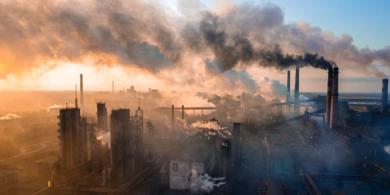
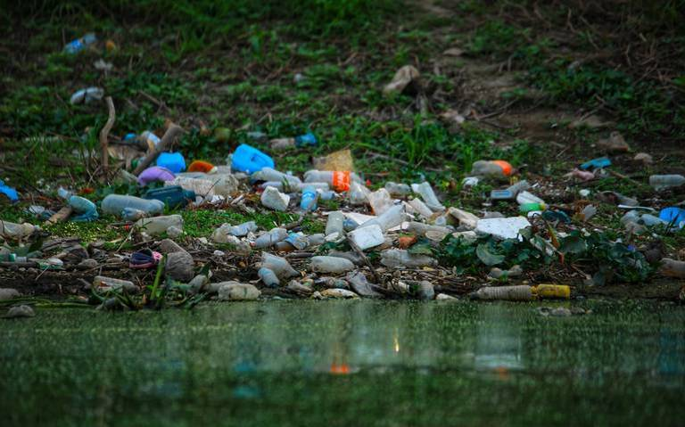

Contaminacion del medio Ambiente
La contaminación ambiental es definida como la presencia de agentes químicos, físicos o biológicos en el ambiente que pueden tener efectos nocivos sobre la seguridad y salud de los seres vivos. A medida que la población comenzó a crecer y aumentar su tecnología, el impacto del ser humano sobre el medio ambiente natural comenzó a ser mayor y más nocivo.
La contaminación comenzó a agravarse exponencialmente en la segunda mitad del siglo XVIII a partir de la Revolución Industrial, por la explotación de recursos minerales y fósiles. De esta manera, el equilibrio del sistema ambiental se perdió y para muchos seres vivos resultó incluso imposible adaptarse a estos grandes cambios.



La contaminación del medio ambiente producida por el ser humano puede tener diversos orígenes y afectar diferentes elementos y organismos del medio natural:
Contaminación del agua. Es producida, principalmente, por los desechos industriales y domésticos arrojados a ríos y mares.
Destrucción de los bosques. Es producida por la tala indiscriminada de árboles que son esenciales para la supervivencia de los seres vivos. En la mayoría de los casos ocurre por la expansión de áreas urbanas, la expansión de zonas de industrias o para actividades de ganadería y agricultura.
Explotación de los recursos naturales. Las actividades de la megaminería, que incluye la extracción de petróleo, generan desechos y ponen en riesgo a los ecosistemas.
Contaminación del aire La industria y los automóviles liberan gases que contribuyen al calentamiento global.